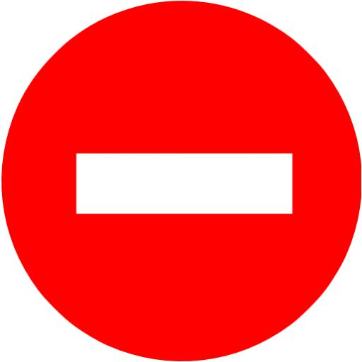
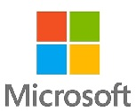

E-health Ventures Group
E-health Ventures Group is a company that creates accessible e-health platforms where people can find the right solution to their medicinal
problems through the combination of specialist medical knowledge, products, information, and advice. This makes self-care easier and more accessible, which enables consumers
to come to an appropriate and safe decision to increase their well-being (which is their goal). They divide their roles into 2 categories: Front-End Developer and Back-End
Developer. The Front-End Developer is responsible for the visible parts of their products, the Back-End Developer is responsible for making functionable code and maintaining
that code. Products of them (will) include "De Online Dokter", "mensam.eu", "A SkinCare platform" (currently Work In Progress), "A platform about aging in a healthy way"
(still only an idea) and "A platform about fertility" (still only an idea). These projects are (/will be) active in 14 countries. Working on the projects are around 50
employees, spread between 2 offices located in breda and Curaçao. These employees have (according to the company) a lot of freedom, flexible hours and a budget to further
their education. They (apparently) also value the personality of an employee just as much as their knowledge, since they lay a big focus on teamwork: "Our open office culture
is characterised by entrepreneurship and teamwork."
Relatively small company with morally good goals.
Good employee benefits and a welcoming working culture.

Doesn't seem like the most exciting projects to work on.
Damen Naval (Vlissingen)
Damen Naval primarily produces naval vessels for a lot of different sectors, a few of which are: Offshore Energy, Harbours, Public Transport,
Defence & Security, Fishing, Yachting. They have been the dedicated shipbuilder for the Royal Netherlands Navy for over 50 years. Apart from building ships, they also repair
or dismantle (broken/ old) ships. Aside from the 4 departments that directly have to do with building/ repairing/ demolishing the ships (Production, Project Management,
Repair & Services and "Supply Chain") there are 8 more departments, one of which is IT (& IM). Some of the roles in the IT department are: "Senior Extended Reality (xR)
Developer" (build serious games/ simulations in virtual reality and/ or augmented reality to help train customers), Cyber Security Engineer (F126) (keep their designs secret
on the internet) and IT Project Manager (manages the IT employees working on projects). Other roles are: Manager ICT, Vendor Manager, Operational Purchaser (IT), Master Data
Maintainer, IT Business Partner, Contract Manager (IT), SharePoint Dev (Ops) Engineer, IT Project Support Officer, IT Project Manager, DevOps Engineer ERP / SAP, Chapter Lead
IT Transformation, IT Application Manager RUN. You can see there's quite a lot of roles in the IT department, which means they work with a lot of IT technologies, which
include, but are not limited to: Unity, C#, Python, Blender, API, Virtual Reality, Augmented Reality, 3D Rendering Programs, ERP (IFS, SAP or similar) and/or information
systems such as PIM and MDM, Microsoft 365, the Power Platform, Agile/ Scrum, PMBOK and/or Prince2, Waterfall, SAP Administration or SAP Consulting, ABAP and Fiori,
integration best practices, ADO Fundamentals, MSP, SAFe, ADKAR. Working (with) these roles are some of the 12000 employees of Damen Naval, spread around 37 dockyard across the
world. Damen Naval is active (sell ships) in around 101 countries. They describe their work culture as being focused around technology and innovation, but also as quite
dynamiuc, diverse and rewarding. Employees have the opportunity to continue learning and developing their skills while working at the company. Social events centered around
business, culture and sports are hosted regularly.
A big amount of different IT roles, so you have a wide variety to pick from.
They enable you to continue learning and developing your skills.
Their IT roles mostly seem like they're meant for more senior developers, not "junior" ones that just graduated from for example HBO.
Microsoft

Everyone knows Microsoft of course. Things they've been working on are: operating systems (Windows), hardware (Xbox, Windows phones) and software
(Search Engines/ Browsers (Internet Explorer, Edge, Bing), Microsoft 365, Microsoft Office, Programs like word, excel, powerpoint, Onedrive, Skype, Xbox, AI, Programs for
developers: .NET, Visual Studio, Microsoft Azure). Two interesting WIP ("Work In Progress") projects are AI and Quantum Computing. Just like (/because) or their wide variety
of products, they also have a wide variety of IT roles. Roles that have to do with securing their products agains hackers/ cheaters (in games): "Security Operations Engineer,
Director of Gaming Sucerity, Principal SRE Manager (of the "Digital Security and Resiliency" department). Roles that have to do with creating software: "Software Engineer,
Principal Software Program Manager". Roles that have to do with creating hardware: "Principal Hardware Engineer, Senior Quantum Engineer (Quantum Computers)". Other roles are:
"Technical Support Engineering, Data Center Technician". Just like Damen Naval, because of their wide (in Microsoft's case probably even wider) variety of roles, they use a
lot of different technologies/ development environments, too many to really tell you about. I will tell you the things Microsoft includes in their technology stack though.
What even is a technology stack I hear you ask, well: “A tech(nology) stack is the combination of technologies a company uses to build and run an application or project.”.
Microsoft's technology stack is: Net Framework, ASP.Net MVC, Dot Net Core, .Net 5 , .Net 6, SQL Server, Visual Studio, Visual Studio Code, Windows Azure, Microsoft Office,
Sharepoint, Microsoft Silverlight, Windows OS, Xbox, Windows Communication Foundation (WCF), Microsoft Dynamics CRM, WinJs, Git Virtual File System (GVFS),
Xamarin - For Mobile App Development, vb.net, ASP.NET Web Forms, Microsoft Win Forms / Microsoft Windows Forms, ASP.NET Web API Framework. As for Microsoft’s work culture, it
can be summarised in a few words: Empathy, Growth mindset, Collaboration, Diversity & Inclusion, Customer-oriented. To achieve this, they treat employees with the respect they
deserve, embrace teamwork, align the company’s goals with the personal goals of the employees, diversify the employees, arrange flexible work conditions (part-time,
job-sharing, telecommuting), make employees be able to grow and develop their skills, be open to the ideas of employees, take risks and learn from possible mistakes, be
innovating, build on the ideas of others and collaborate across boundaries.
A even bigger amount of different IT roles (than Damen Naval)
A focus on diversity and teamwork, which means you’ll be meeting a lot of people from different backgrounds, which will make you more open-minded
and worldwise.
They seem to treat their employees with respect and enable them to grow (their education and skills).
It's a very big company that many people would like to work for, so you might be less reluctant about firing people (when they make relatively small
mistakes) and might not want more junior developers, though from what I've seen they do have internships.